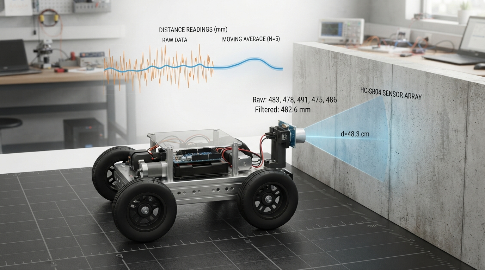

A smoother sensor signal is not automatically a better control signal.
This Professor OS lesson uses RoboRover to teach moving-average filters through hand calculations, plotted Python output, and a deliberately suspicious distance spike. Students learn to:
• calculate a trailing moving average and track a sliding window;
• compare window sizes and observe the trade-off between smoothness and responsiveness;
• understand why one unusual reading can influence several later outputs;
• estimate steady-state group delay from window size and sampling rate;
• distinguish signal processing from the larger feedback-control system.
The lab includes executable assertions, raw-versus-filtered plots, startup behavior, and a tuning challenge. Try changing the window from 1 to 3 to 5, then ask whether the calmer signal would still be fast enough for a real robot.
Explore Professor OS: https://connect.vin/professor-os
#Robotics #Sensors #Python #Engineering
This Professor OS lesson uses RoboRover to teach moving-average filters through hand calculations, plotted Python output, and a deliberately suspicious distance spike. Students learn to:
• calculate a trailing moving average and track a sliding window;
• compare window sizes and observe the trade-off between smoothness and responsiveness;
• understand why one unusual reading can influence several later outputs;
• estimate steady-state group delay from window size and sampling rate;
• distinguish signal processing from the larger feedback-control system.
The lab includes executable assertions, raw-versus-filtered plots, startup behavior, and a tuning challenge. Try changing the window from 1 to 3 to 5, then ask whether the calmer signal would still be fast enough for a real robot.
Explore Professor OS: https://connect.vin/professor-os
#Robotics #Sensors #Python #Engineering

Moving Average Filters: Teaching Robot Sensing Without Hiding the Delay
A practical robotics lesson on smoothing noisy sensor data, calculating moving averages, tuning window size, and understanding why cleaner signals can respond too late.